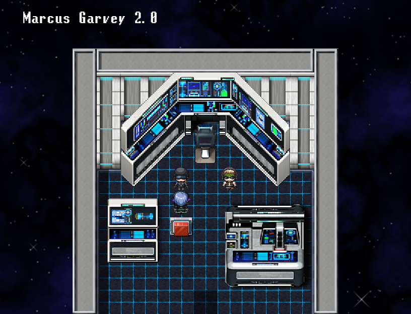
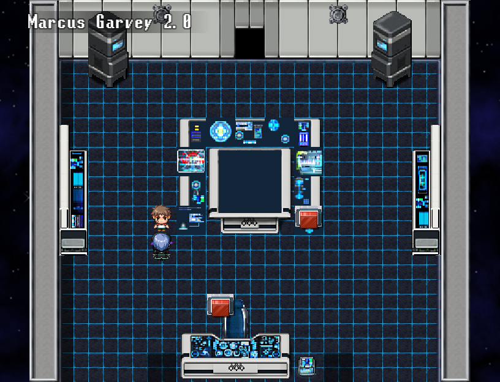
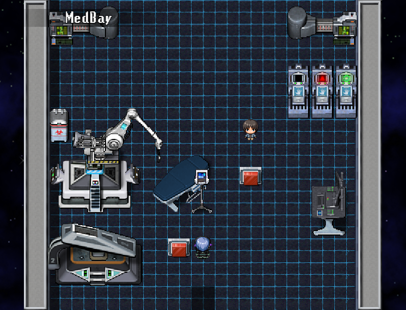
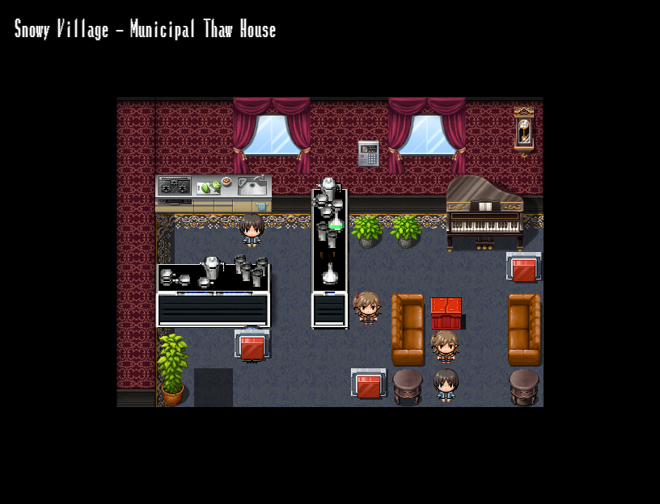
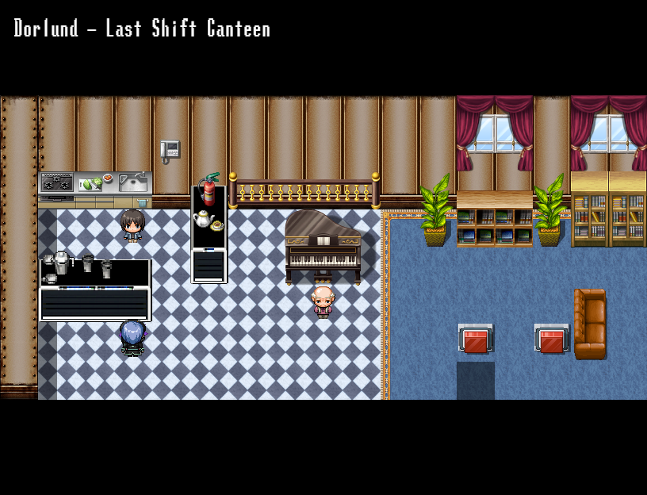

Initial248 maps checked for person starting tiles and fixed transfer landings. Corrected209 shared passage flags,21 event positions and one return destination. A20 adds two checked showroom layouts, bringing the current audit to250 maps. The companion routes now use native walking and action-button targeting for their captures.

The navigator and Jack stand on clear floor outside the console and chair footprints.





Audit scope, exceptions and evidence · Corrected companion chapter captures